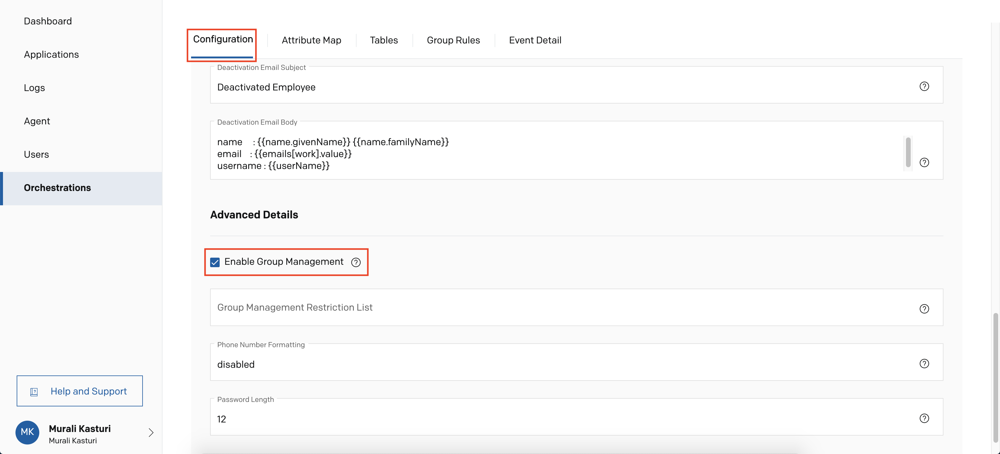
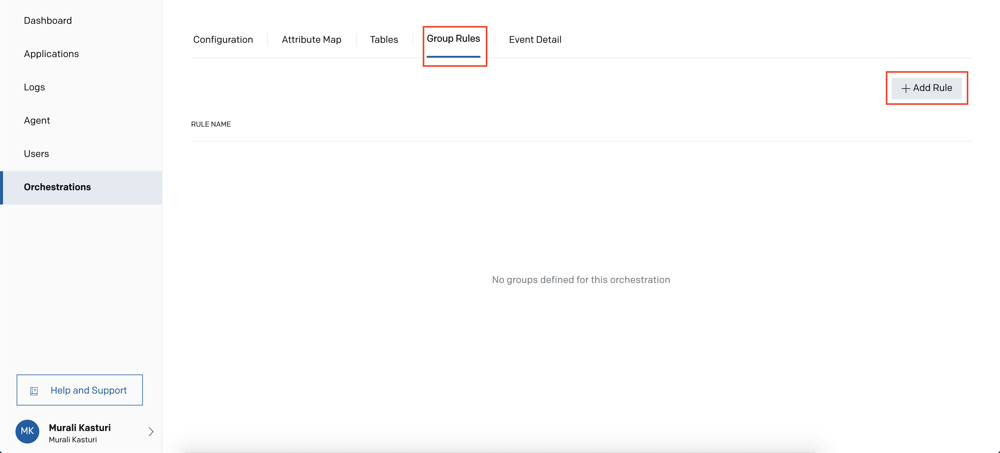
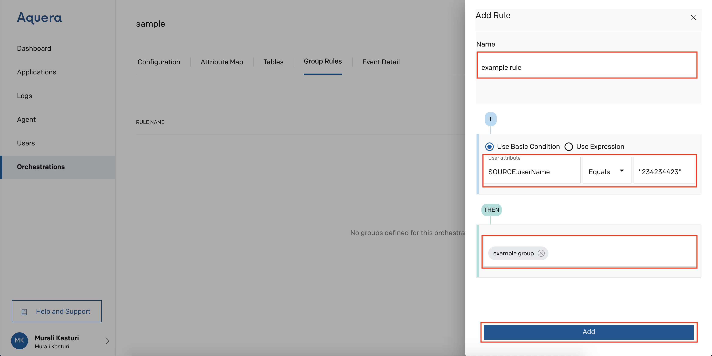
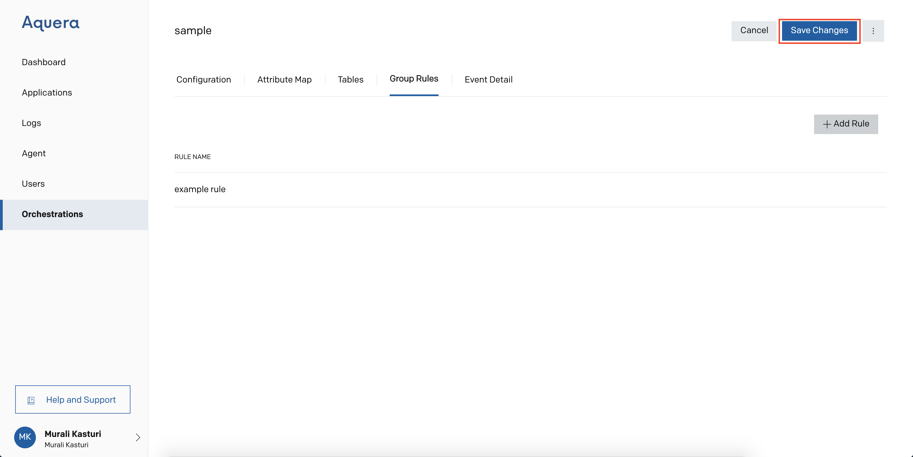
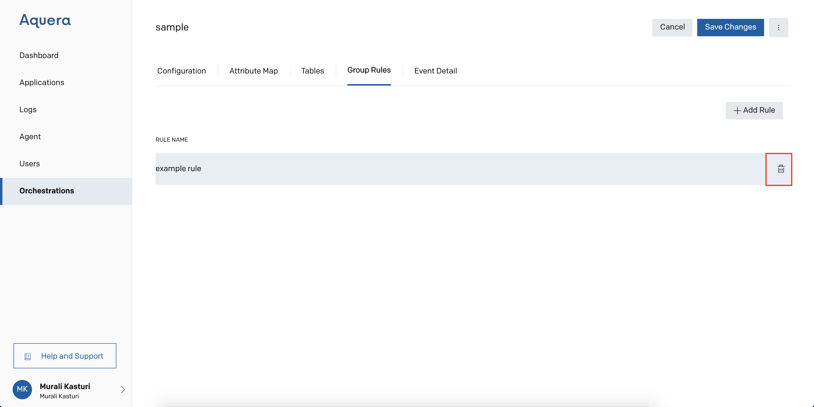

Group Rules
Functions
Manipulation of group membership is facilitated through group rules. To take advantage of this feature, Enable Group Management and Group Management Restriction List must be configured in the Configuration section. Group Rules support basic and full expressions. Expressions can use all of the helper functions as well as SOURCE and DEST based attributes.

Users can define their own rules for the groups with regard to updating the data.
For this, go to Group Rules and click Add Rule 
Provide a name to the rule, write the IF condition and add the Group Name under THEN
Click Add Rule 
After framing the rules, user needs to click Save Changes on the top right of the page

The user can update the rule on clicking the rule name or delete the group rules by clicking Delete icon

User can review the outcome from the orchestration logs.
Once Group Management is selected, the orchestration will manipulate the group membership of all of the groups specified in the Group Management Restriction List, or all groups if the list is left empty. One rule must be defined for each managed group. If the rule resolves to “true”, then the user will be included in the group’s membership; otherwise the user will be excluded.
UTILS.isSubordinate(User ID, Manager ID) -- This is available in all expressions and this function is used to determine if a user is within the reporting hierarchy of a manager. For example, if the user is within the organization of a VP then this function can be used to determine this. This function takes the user.id and the manager user.id and will look up the management hierarchy to see if the user reports directly or indirectly to the manager.id. The function returns true when User ID is a subordinate; otherwise false.
UTILS.isManager(SOURCE|DEST) -- This function returns true if the object parameter is a manager. This function is only useful in full (non-incremental) runs.